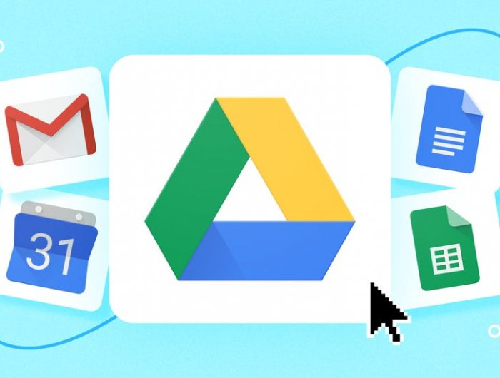

Google Drive mungkin sudah tidak asing lagi bagi pengguna layanan penyimpanan online. Google Drive merupakan salah satu layanan penyimpanan online yang terintegrasi dengan berbagai macam aplikasi seperti email, photo, pengolah kata (google docs), pengolah angka (google sheets), dan lain-lain. Selain itu, kemudahan sinkronisasi data dengan berbagai perangkat menjadikan Google Drive menjadi salah satu layanan penyimpanan online yang paling banyak digunakan.
Seperti kebanyakan layanan penyimpanan online lainnya, Google juga menyediakan aplikasi desktop agar pengguna bisa mengakses Google Drive seperti media penyimpanan fisik (hardisk) di komputer pengguna.